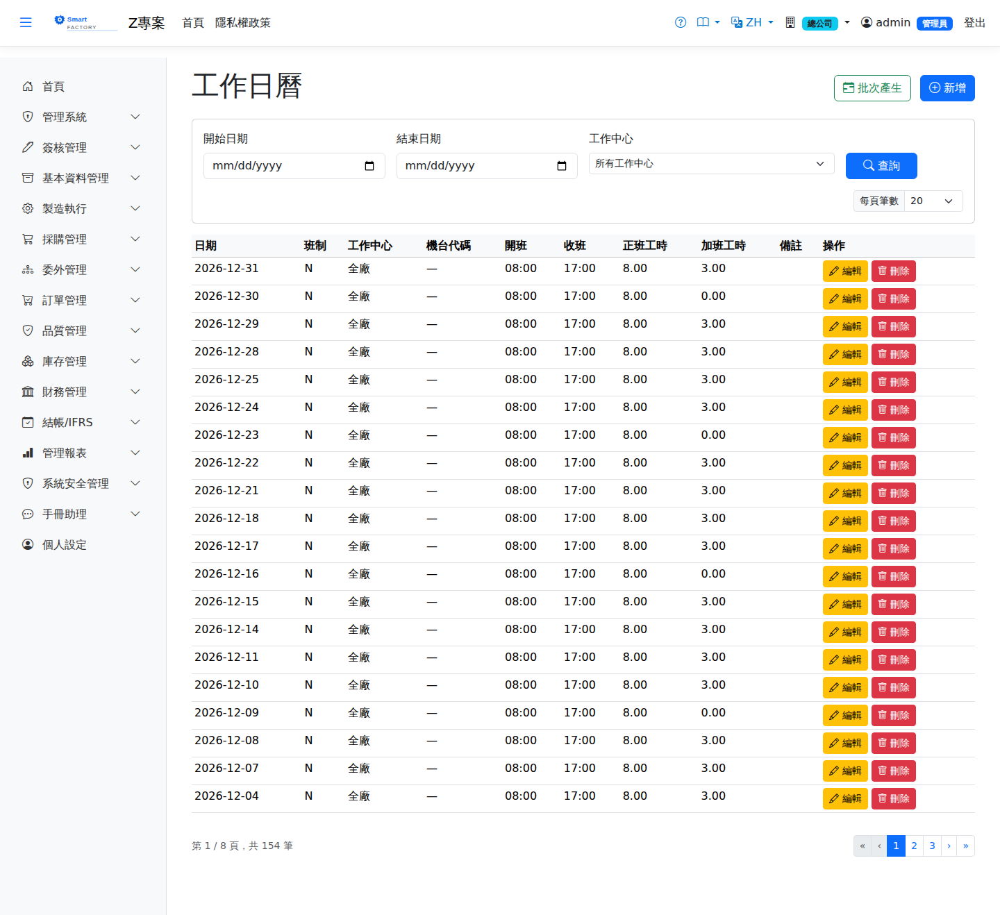

工作日曆Work Calendar
路由：/WorkCalendar | 廠別工作日/非工作日與可用工時維護Route: /WorkCalendar | Maintenance of working and non-working days and available hours per plant
工作日曆決定 MRP 排程與產能計算可用的工作日與每日可用工時（結合班別群組），也是 OEE「計畫稼動時間」的資料來源。特殊假日、補班日請於 BAS「特殊日」維護後在此檢視結果。The work calendar decides which days are working days and how many hours are available each day (together with the shift group) for MRP scheduling and capacity calculation, and it is also the source of the "planned run time" used in OEE. Maintain special holidays and make-up working days under "Special Days" in BAS, then review the result here.

工作日曆畫面截圖（示意，實際欄位/資料依權限與查詢條件而異）Work calendar screenshot (illustrative; actual fields and data vary by permission and query criteria)
查詢Search
1
查詢列輸入條件後點「查詢」；欄位標題可點擊排序，清單下方有分頁導航。Enter your criteria on the query bar and click "Search"; column headers can be clicked to sort, and the paging controls sit below the list.
2
可切換月份檢視各日班別與可用分鐘數。Switch month to see the shift and available minutes for each day.
欄位說明Field reference
查詢條件Query criteria
| 條件Condition | 說明Guide |
|---|---|
| 開始日期 / 結束日期Start date / End date | 要檢視或維護的日曆區間Calendar range to view or maintain |
| 工作中心Work Center | 只看單一工作中心的日曆；留空為全部The calendar of one work center only; leave blank for all |
日曆欄位Calendar fields
| 欄位Field | 說明Guide |
|---|---|
| 日期Date | 必填Required 此筆日曆設定所屬的日期Date this calendar entry applies to |
| 班制Shift pattern | 展開此日曆的來源班別群組；由班別群組批次展開時自動帶入Shift group the calendar was generated from; filled in automatically when a shift group is expanded in bulk |
| 工作中心Work Center | 設定適用的工作中心；留空表示廠級通用設定Work center the setting applies to; leave blank for a plant-wide setting |
| 機台代碼Machine | 設定適用的特定機台。廠別／工作中心／機台三層由細至粗 fallback，最細者優先The specific machine the setting applies to. Plant, work center and machine form three levels from fine to coarse, and the most specific one wins |
| 開班 / 收班Shift start / Shift end | 正班的起訖時刻。留空表示全天 24 小時；收班時刻小於開班時刻代表跨午夜班Start and end time of the regular shift. Leave blank for a full 24 hours; an end time earlier than the start time means the shift runs past midnight |
| 正班工時Regular hours | 該日可用的正常班別工時（小時）。排程可用產能與 OEE 的計畫時間都以正班＋加班為分母Regular shift hours available that day. Scheduling capacity and the planned time in OEE both use regular plus overtime as their denominator |
| 加班工時Overtime hours | 該日額外可動用的加班工時（小時）。排程會把作業排進加班，加班時段接在當日正班的最後一段之後，甘特圖上以較深的顏色畫出。當日沒有正班班別時（假日、週末）不會產生加班時段，即使此欄有值也一樣——沒有正班可接的加班沒有起點Extra overtime hours available that day. The scheduler does place work into overtime; the overtime block follows the last regular segment of the day and is drawn in a darker shade on the Gantt chart. No overtime is produced on a day with no regular shift (holidays and weekends), even when this field has a value — overtime with no regular time to follow has no starting point |
| 備註Notes | 如國定假日、歲修等說明Notes such as public holidays or the annual overhaul |
相關畫面Related screens
生產排程Production Schedule、OEE 設備綜合效率OEE overall equipment effectiveness
MRP 倒推遇非工作日會自動跳過；日曆缺漏會導致排程集中在錯誤日期，上線前請先確認全年日曆。Back-scheduling automatically skips non-working days; gaps in the calendar push the schedule onto the wrong dates, so confirm the whole year's calendar before going live.
改了加班時數之後，排程要看得到它，得先重建當月的可用時段。
在本畫面直接編輯某一日的加班時數（或搬動它的日期、班制、工作中心、機台）時，系統會自動重建，存檔即生效，不必再做別的事。
但本功能啟用前就已經產生的日曆，可用時段仍是舊的、只含正班——請對該年月按一次「批次產生」，不勾「重產即覆蓋既有資料」也會重建可用時段，
已經存在的日曆列與你調整過的加班時數都會原樣保留，不會被班制的預設值蓋回去。After changing overtime hours, the available time for that month has to be rebuilt before the scheduler can see them.
When you edit a day's overtime here (or move its date, shift pattern, work center or machine), the rebuild happens automatically and takes effect on save; nothing else is needed.
However, calendars generated before this feature existed still carry the old regular-time-only segments — run Batch Generate once for that year and month. Even without ticking "Overwrite existing on regenerate" the available time is rebuilt,
while the existing calendar rows and any overtime you adjusted are kept exactly as they are and are never reset to the shift pattern's defaults.